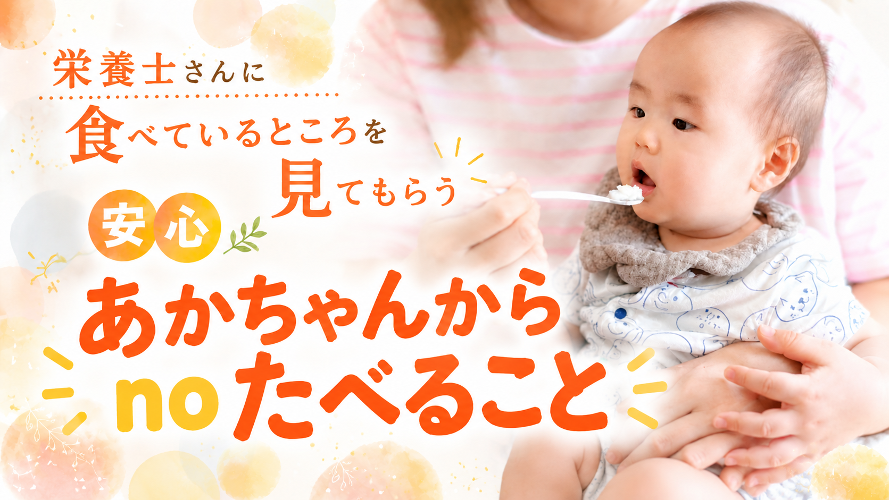

親子向け講座
パワーポイントのスライドを使い、
食べさせ方や姿勢の話（約30分）
離乳食を持参し、実際に食べさせながらの個別相談
（普段の食事動画持参も可）

小食でも、偏食でも、食べることが好きな子になる講座
赤ちゃんが「食べない」「丸呑みする」などの
原因は、味や形状ではなく食べさせ方や姿勢が
成長にあっていないことがほとんどです。
当講座では現役の保育士・栄養士である講師が
実際にお子さんの食べているところを確認しながら、
発達段階に合わせてアドバイス。

パワーポイントのスライドを使い、
食べさせ方や姿勢の話（約30分）
離乳食を持参し、実際に食べさせながらの個別相談
（普段の食事動画持参も可）
成長に応じた食べさせ方・姿勢の話、
（パワーポイントのスライド使用）
職員が赤ちゃんになり、
食べさせてもらう気分を体験
質疑応答（約60分）
ご自宅へ伺い、お子様の発達状況や
食事環境（椅子やスプーンなど）を確認したうえで
実際の食事の様子を見ながら
アドバイスさせていただきます。
現役で保育園勤務！保育士・栄養士・２児の母
２０１８年より、お子様の発達や食べ方を見極め、
その子に合った食事方法をお伝えする講座を定期開催。
年間１００組以上の保護者や保育士のご相談に乗っています。
さらに、大人も魅了される音楽付きの絵本読み聞かせ
「えほんdeコンサート」も展開。
“絵本と音楽と食”
を通して、乳幼児親子に笑顔を届ける活動を続けています。
「ころころもぐもぐあかちゃんひろば」も
併せてご覧ください。